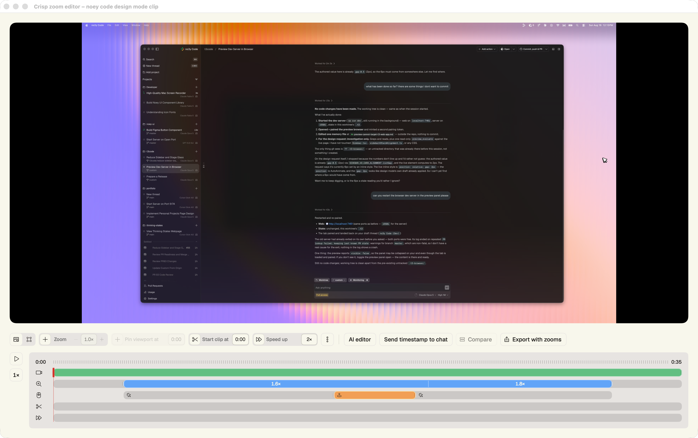

Shape zooms on the timeline
Set the level, drag the timing, pin the viewport, trim the take, and speed through the slow parts.
Capture a maximum-fidelity master, then turn clicks into smooth, intentional camera moves in a timeline built for screen recordings.

Crisp logs the cursor and every click while you record. The editor gives you the control to shape them after.
Set the level, drag the timing, pin the viewport, trim the take, and speed through the slow parts.
The viewport follows the cursor through each zoom, so the action stays framed without a pile of keyframes.
Hand the plan, click log, and annotated frames to Claude Code or Codex. Review the changes side by side before you keep them.
The whole workflow is native, local, and designed around one thing: making screen recordings feel considered.
Record a display, an app window, a Chrome tab, or a region at native Retina resolution.
Use the visual timeline to tune zooms, framing, clips, trims, and speed-ups.
Render a smooth 10-bit HEVC video or keep an archival ProRes master at full quality.
No account. No cloud upload. Just a native recorder, a focused editor, and the master files on your Mac.
Download for macOSRequires macOS 14 Sonoma or later on Apple silicon.